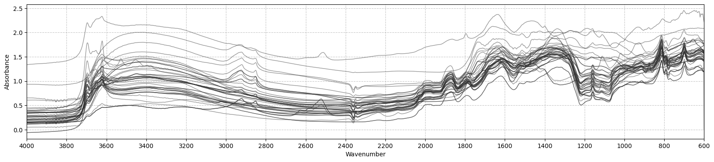
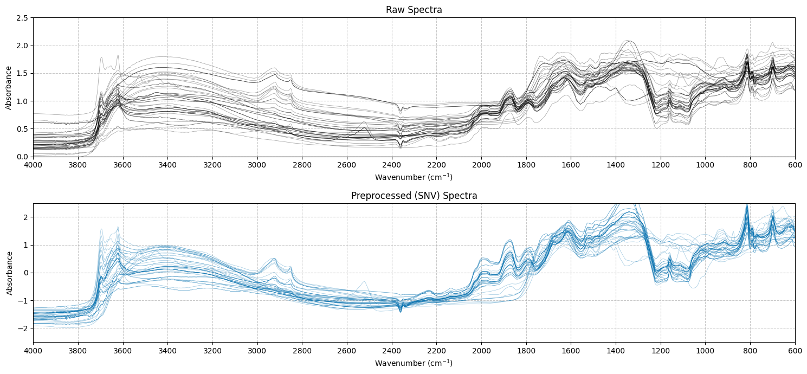
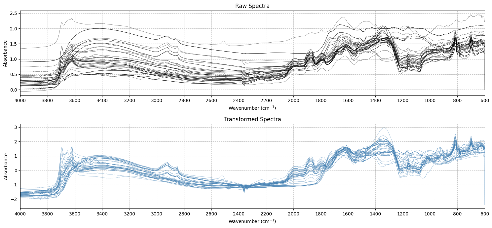

from soilspecdata.datasets.ossl import get_ossl
from sklearn.pipeline import Pipeline
from soilspectfm.core import SNV
from soilspectfm.utils import load_toy_mirVisualization
Visualization tools for spectroscopic data.
Let’s load some data to get started using the soilspecdata package.
plot_spectra
plot_spectra (X:numpy.ndarray, w:numpy.ndarray, sample:int=50, ascending:bool=True, ax:matplotlib.axes._axes.Axes=None, **kwargs)
Plot spectral data with customizable matplotlib parameters.
| Type | Default | Details | |
|---|---|---|---|
| X | ndarray | Array of shape (n_samples, n_features) containing spectral data | |
| w | ndarray | Array of wavelengths/wavenumbers corresponding to spectral features | |
| sample | int | 50 | Number of spectra to randomly sample (if None, plot all spectra) |
| ascending | bool | True | Whether to plot wavelengths/wavenumbers in ascending order |
| ax | Axes | None | Optional matplotlib axes for plotting. If None, creates new figure |
| kwargs | |||
| Returns | Axes | Additional parameters for plot customization |
Exported source
deep_blue, blue, orange, red = '#0571b0', '#92c5de', '#f4a582', '#ca0020'Exported source
def plot_spectra(
X: np.ndarray, # Array of shape (n_samples, n_features) containing spectral data
w: np.ndarray, # Array of wavelengths/wavenumbers corresponding to spectral features
sample: int = 50, # Number of spectra to randomly sample (if None, plot all spectra)
ascending: bool = True, # Whether to plot wavelengths/wavenumbers in ascending order
ax: plt.Axes = None, # Optional matplotlib axes for plotting. If None, creates new figure
**kwargs # Additional parameters for plot customization
) -> plt.Axes:
"""Plot spectral data with customizable matplotlib parameters."""
def _prepare_data(X: np.ndarray, sample: int) -> np.ndarray:
"""Prepare data for plotting by sampling and reshaping if needed."""
if len(X.shape) == 1:
return X.reshape(1, -1)
if sample is not None:
idx = np.random.randint(X.shape[0], size=sample)
return X[idx,:]
return X
def _setup_axes(w: np.ndarray, ascending: bool, ax: plt.Axes, **params) -> plt.Axes:
"""Setup the axes with basic parameters."""
if ax is None:
_, ax = plt.subplots(figsize=params.get('figsize', (20, 4)))
_min, _max = np.min(w), np.max(w)
_order = [_min, _max] if ascending else [_max, _min]
ax.set_xlim(*_order)
ax.grid(True, linestyle='--', alpha=0.7)
ax.locator_params(axis="x", nbins=20)
return ax
def _set_labels(ax: plt.Axes, **params) -> None:
"""Set axes labels and title."""
ax.set_xlabel(params.get('xlabel', 'Wavenumber'))
ax.set_ylabel(params.get('ylabel', 'Absorbance'))
if params.get('title'):
ax.set_title(params.get('title'))
# Separate figure-level and line-level parameters
fig_params = {
'figsize': kwargs.pop('figsize', (20, 4)),
'xlabel': kwargs.pop('xlabel', 'Wavenumber'),
'ylabel': kwargs.pop('ylabel', 'Absorbance'),
'title': kwargs.pop('title', None)
}
# Set defaults for line parameters
line_params = {
'alpha': 0.6,
'color': '#333',
'lw': 1
}
line_params.update(kwargs)
# Execute plotting sequence
X = _prepare_data(X, sample)
ax = _setup_axes(w, ascending, ax, **fig_params)
for spectrum in X:
ax.plot(w, spectrum, **line_params)
_set_labels(ax, **fig_params)
return axX, ws = load_toy_mir()
ax = plot_spectra(X, ws, ascending=False, alpha=0.5)
# Create subplots and customize them
fig, (ax1, ax2) = plt.subplots(2, 1, figsize=(15, 7))
# Plot raw spectra on first subplot
ax1 = plot_spectra(
X,
ws,
ax=ax1,
ascending=False,
color='black',
alpha=0.4,
lw=0.5,
xlabel='Wavenumber (cm$^{-1}$)',
title='Raw Spectra'
)
# Plot preprocessed spectra on second subplot
ax2 = plot_spectra(
SNV().fit_transform(X),
ws,
ax=ax2,
ascending=False,
color=deep_blue,
alpha=0.4,
lw=0.5,
xlabel='Wavenumber (cm$^{-1}$)',
title='Preprocessed (SNV) Spectra'
)
# Further customize if needed
ax1.set_ylim(0, 2.5)
ax2.set_ylim(-2.5, 2.5)
plt.tight_layout()
Or abstracting the plotting into a function for demonstration purposes (and convenience):
plot_spectra_comparison
plot_spectra_comparison (X_raw:numpy.ndarray, X_transformed:numpy.ndarray, wavenumbers:numpy.ndarray, raw_title:str='Raw Spectra', transformed_title:str='Transformed Spectra', figsize:tuple=(15, 7), **kwargs)
Plot raw and transformed spectra for comparison.
Exported source
def plot_spectra_comparison(
X_raw: np.ndarray,
X_transformed: np.ndarray,
wavenumbers: np.ndarray,
raw_title: str = 'Raw Spectra',
transformed_title: str = 'Transformed Spectra',
figsize: tuple = (15, 7),
**kwargs):
"Plot raw and transformed spectra for comparison."
raw_color = kwargs.pop('raw_color', 'black')
transformed_color = kwargs.pop('transformed_color', 'steelblue')
fig, (ax1, ax2) = plt.subplots(2, 1, figsize=figsize)
common_params = {
'ascending': False,
'alpha': kwargs.pop('alpha', 0.6),
'lw': kwargs.pop('lw', 0.5),
'xlabel': 'Wavenumber (cm$^{-1}$)',
**kwargs
}
# Plot raw spectra
ax1 = plot_spectra(
X_raw,
wavenumbers,
ax=ax1,
color=raw_color,
title=raw_title,
**common_params
)
# Plot transformed spectra
ax2 = plot_spectra(
X_transformed,
wavenumbers,
ax=ax2,
color=transformed_color,
title=transformed_title,
**common_params
)
plt.tight_layout()
return fig, (ax1, ax2)plot_spectra_comparison(
X,
SNV().fit_transform(X),
ws,
raw_title='Raw Spectra',
transformed_title='Transformed Spectra'
);